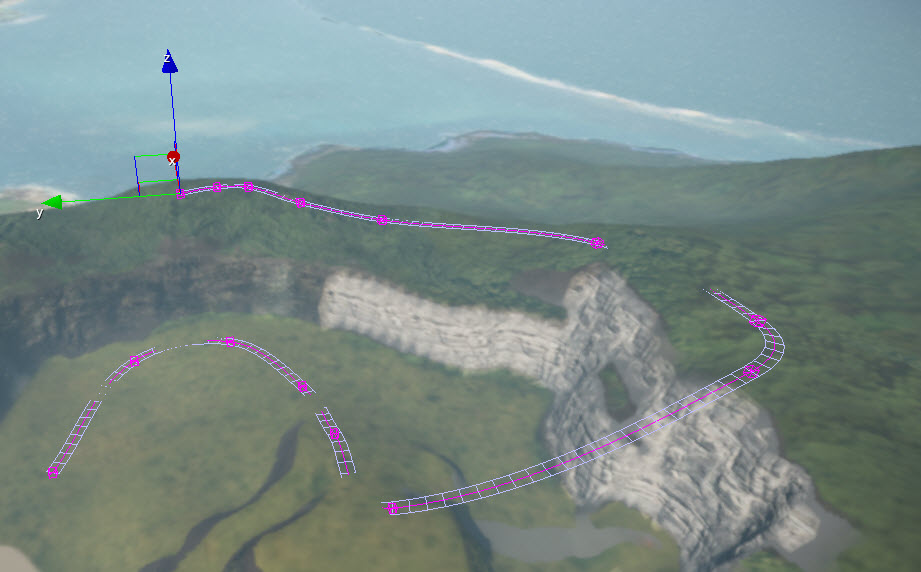

Overview
The Misc Objects can be found on the Create Object tab. They include various tools and functions used in game development and particularly level design.
Camera
A camera object is used to define custom views of your level. They can be triggered via the Flow Graph and Track View, and are heavily used within animated sequences.
For more Information, please see Camera.
Comment
The comment tool allows the adding of comments anywhere inside a level.
For more Information, please see Comment.
Decal
Placing decals in a level is a simple way to break up uninteresting textures, as well as bring together various level elements like brushes and terrain. A decal material has to be marked with the Decal flag in the Shader Generation Parameters in the material options.
For more Information, please see Decal.
DistanceCloud
Distance Clouds are basically horizontal planes placed into the sky. Unlike other types of clouds they cannot be flown through and thus they're mostly suitable for filling the sky in at far distances (horizon) or high altitudes.
For more Information, please see DistanceCloud.
Environment Probe
With Environment Probes you have the ability to place cubemaps easily throughout a level just as you would a light. It is very useful especially with reflective materials because it will automatically assign the cubemap to anything within its radius.
This tool can be useful when used with dynamic lighting as well; it just requires a minor Flow Graph setup so that the different probes used in different situations will transition smoothly.
With the introduction of Physically Based Shading in CRYENGINE 3.6 cubemaps control many things in the engine now. Everything from Shadow colors, ambient diffuse values, particle diffuse, and reflections. They act as bounce lighting by taking the colors from the surroundings and applying them directly into the diffuse of materials inside their radius.
For more information, please see Environment Probe.
Reference Picture
The main purpose of the Reference Picture setup is that the ReferenceImage shader does not receive light or other shader information from within the level. It keeps the image at its pure source.
For more information, please see Reference Picture.
River
The River Tool functions similarly to the Road Tool, but is preferable for setting up rivers as it contains several more, and very important, parameters needed for creating realistic looking rivers.

For more information, please see The River Tool.
Road
The Road Tool uses a series of points to shape terrain and/or apply a texture on top of the terrain texture. Its use is not limited to designing roads in the traditional sense, but can also be used generally to shape terrain.
After the road is placed, the points in the road can be edited, and the terrain can be aligned to the height and curvature of the road.
Depending on the purpose of the road, it may be useful to first place a vehicle in the level so that you can test the width, curvature, and slope of the road.

For more Information, please see The Road Tool.
Rope
Ropes can be used to attach objects together or to hang objects from. They react to objects around them, but will not affect those objects.
| Attached | Not Attached |
|---|
Please see the Rope Tool tutorial.
Spline Distributor
You can make precise changes to the geometry by adjusting the spline points and parameters.
For more information, please see Spline Distributor.